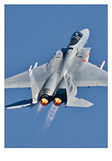
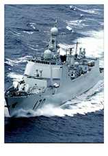
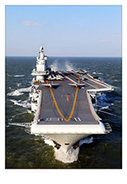

中国空军
中国人民解放军空军（Air Force of the CPLA）于1949年11月11日正式成立，经过半个世纪的建设，人民空军已经发展成为一支由航空兵、地空导弹兵、高射炮兵、雷达兵、空降兵、电子对抗、气象等多兵种合成，由歼击机、强击机、轰炸机、运输机等多机种组成的现代化的高技术军种。主要任务是担负国土防空，支援陆、海军作战，对敌后方实施空袭，进行空运和航空侦察。
中国陆军
中国人民解放军陆军现主要由步兵（摩托化步兵、机械化步兵）、炮兵（地面炮兵、高射炮兵）、装甲兵、工程兵、通讯兵、防化兵和侦察兵、电子对抗、汽车兵、测绘兵、气象兵等专业部队组成。
中国海军
中国人民解放军海军以新型航空母舰、新型驱逐舰、新型潜艇、新型战斗机为代表的新一代主战装备，以及与其相配套的新型导弹、鱼雷、舰炮，电子战装备等武器系统陆续交付使用。人民海军已经拥有大型区域防空舰、核动力潜艇、AIP潜艇等世界先进武器装备，中国人民解放军海军航空兵现已装备了轰炸机、巡逻机、电子干扰机、水上飞机、运输机等勤务飞机。海防导弹形成系列，不仅有岸对舰导弹、舰对舰导弹，还有舰对空导弹、空对舰导弹、空对空导弹等。
中国人民解放军陆军现主要由步兵（摩托化步兵、机械化步兵）、炮兵（地面炮兵、高射炮兵）、装甲兵、工程兵、通讯兵、防化兵和侦察兵、电子对抗、汽车兵、测绘兵、气象兵等专业部队组成。
中国海军
中国人民解放军海军以新型航空母舰、新型驱逐舰、新型潜艇、新型战斗机为代表的新一代主战装备，以及与其相配套的新型导弹、鱼雷、舰炮，电子战装备等武器系统陆续交付使用。人民海军已经拥有大型区域防空舰、核动力潜艇、AIP潜艇等世界先进武器装备，中国人民解放军海军航空兵现已装备了轰炸机、巡逻机、电子干扰机、水上飞机、运输机等勤务飞机。海防导弹形成系列，不仅有岸对舰导弹、舰对舰导弹，还有舰对空导弹、空对舰导弹、空对空导弹等。
歼-20 特点介绍
鸭式布局
翼面全动
DSI进气
腹鳍设计
隐身设计
中国海军驱逐舰 052C型导弹驱逐舰
2013年12月26日上午，第四艘052C型导弹驱逐舰151号郑州舰入列命名授旗仪式在东海舰队某驱逐舰支队隆重举行，标志着该舰正式加入人民海军战斗序列。
郑州舰是我国自行研制设计生产的新一代导弹驱逐舰，为有着“中华神盾”美誉的052C驱逐舰后续舰，也是东海舰队继150长春舰之后入列的第二艘该型舰艇。该舰舷号151，最大长度155米，宽17米，满载排水量6000余吨，装备了多套我国自主研发的新型武器装备，性能先进，技术含量高，可单独或协同海军其他兵力攻击水面舰艇、潜艇，具有较强的远程警戒探测和区域防空作战能力。
052C型导弹驱逐舰，北约代号旅洋-Ⅱ级，是中国人民解放军海军的一型防空导弹驱逐舰，首舰170兰州号于2005年9月服役。本级舰亦为全世界现役军舰中第三个安装了四面大型固定式有源相控阵雷达的军舰之一（另外为日本的日向级直升机驱逐舰和秋月级护卫舰），本级舰的服役使中国海军第一次拥有了远程区域防空能力，被誉为中华神盾舰，为中国现役战力最强的驱逐舰。 已有4艘服役，分别是南海舰队的170兰州舰、171海口舰， 东海舰队的150长春舰，151郑州舰。还有2艘已下水。
052C沿用052B型驱逐舰的舰体基本设计，推进、电力供应相同，不过上层结构经过修改，艏楼较052B更高以容纳相控阵，舰体尺寸幅度也略为放大，052B满载排水量5850吨级，而052C的满载排水量则提高到6400至6500吨左右。052C设置一个机库，反潜直升机选用俄制卡-28直升机或直-9C。
现在可以得出结论，采用与现代级驱逐舰类似装备的052B只是一种填补战力空隙的过渡性舰种，而技术跨度大较具前瞻性的052C才是中国新世纪防空舰艇的真正重点发展型号。
052C最引人注目之处就是艏楼四周加装了四具大型的固定式相控阵天线，即H/LJG 346主动相控阵雷达系统。由于搭载了舰载有源相控阵雷达，且配备有性能优秀的红旗-9型防空导弹，因此该级舰具有较强的远程警戒探测和区域防空作战能力，将进一步强化舰队的区域防空能力。
辽宁号航空母舰
辽宁号航空母舰（代号：001型航空母舰，舷号：16，简称：辽宁舰），是中国人民解放军海军隶下的一艘可以搭载固定翼飞机的航空母舰，也是中国第一艘服役的航空母舰。
辽宁号航空母舰前身是苏联海军的库兹涅佐夫元帅级航空母舰次舰瓦良格号，20世纪80年代中后期，瓦良格号于乌克兰建造时遭逢苏联解体，建造工程中断，完成度68%。1999年，中国购买了瓦良格号，于2002年3月4日抵达大连港。2005年4月26日，开始由中国海军继续建造改进。解放军的目标是对此艘未完成建造的航空母舰进行更改制造，及将其用于科研、实验及训练用途。2012年9月25日，正式更名辽宁号，交付予中国人民解放军海军。
2013年11月，辽宁舰从青岛赴中国南海展开为期47天的海上综合演练，期间中国海军以辽宁号航空母舰为主编组了大型远洋航空母舰战斗群，战斗群编列近20艘各类舰艇。这是自冷战结束以来除美国海军外西太平洋地区最大的单国海上兵力集结演练，亦标志着辽宁号航空母舰开始具备海上编队战斗群能力。
苏联时期，其军事指导思想首先否决了核战争能够赢得战争胜利的观点，核战争“不可能成为达到政治战略目的的手段”，所以苏联和俄罗斯海军仍然重视常规武装力量建设，鉴于苏联和俄罗斯航空母舰舰载机数量有限，质量跟不上，且不可能为航空母舰配备像美国航母战斗群那样的护航舰队，因此，适当增强航母自身的攻击能力就显得尤为重要。
尽管以牺牲舰载机的数量来装备强大的反舰和防空导弹系统与传统航空母舰的发展趋势格格不入，但是苏联海军并没有把航空母舰作为一个主要的进攻反击力量，而是将航空母舰作为一种辅助力量，将航空母舰的载机能力与巡洋舰的攻击能力集成在一起，一定程度上不仅增强了航母自身的攻击能力和防卫能力，也可以减小航空母舰编队规模。从而用航空母舰掩护导弹巡洋舰和攻击核潜艇进入还击来犯航空母舰的攻击阵位，然后利用苏海军具有强大攻击力量的导弹威慑/击毁来犯航空母舰。这就是之所以在这种军事指导思想下建立的苏联海军，即使没有像西方那样先进的航空母舰，但是却能够与西方航母舰队相抗衡的条件。
结束
-

- 
- 
-

-

- 
-